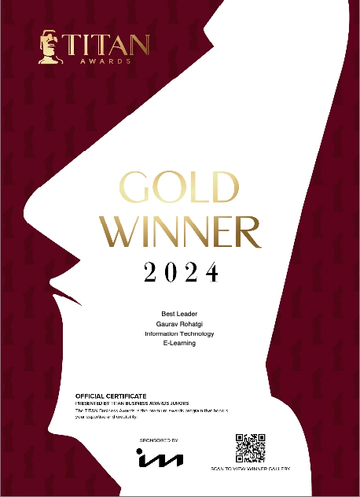

Certificates & Awards
Major Awards & Recognition
2024 - Gold Titan Awards

🏆 Best Leader 2024
Winner of the Gold Titan Awards 2024 for Best Leader
Recognized for outstanding leadership in fintech innovation and AI/ML integration. This prestigious award acknowledges exceptional contributions to the technology industry and leadership excellence in driving transformative solutions.
Professional Recognition
- Fintech Trailblazer - Recognized for revolutionizing payment security and automation, particularly in credit card payments via ATMs
- AI/ML Innovation Leader - Acknowledged for integrating cutting-edge AI/ML solutions in financial services
- Technology Thought Leader - Featured in major industry publications and media outlets
- 18+ Years of Excellence - Veteran Java Developer with extensive expertise in leading tech teams
Academic & Research Achievements
- 22+ Published Research Papers - Extensive publications in peer-reviewed journals and conferences
- Multi-Journal Reviewer - Serving as peer reviewer for 7+ prestigious academic journals including IJERT, IJAIML, IJFMR, JSAER, and IJSR
- High-Impact Research - Publications on fintech, AI/ML, cloud computing, and software architecture
- Industry-Academia Bridge - Translating research into practical industry applications
Professional Certifications & Learning
Continuous professional development through verified certifications and specialized training programs. View detailed certifications on the LinkedIn Learning Certifications page.
Key Certifications Include:
- JAVA EE - Design Pattern & Architecture
- Practical GitHub Copilot
- Deep Learning: Getting Started
- Gen AI: Intro to LLM
- AI Foundation: Thinking Machine
Community Contributions
- CodePath.org Mentor - Active mentoring role helping developers advance their careers
- IEEE Member - Member of the Institute of Electrical and Electronics Engineers
- ACM Community Member - Association for Computing Machinery
- Knowledge Sharing - Extensive media coverage and thought leadership contributions
Industry Impact
Contributions recognized across multiple dimensions:
- Innovation - Pioneering solutions in payment security, ATM credit card processing, and fintech automation
- Research - 22+ peer-reviewed publications advancing knowledge in fintech and AI/ML
- Leadership - 18+ years leading technology teams and delivering innovative solutions
- Mentorship - Guiding next generation of developers and technologists
- Media Presence - Featured in 9+ major industry publications and news outlets